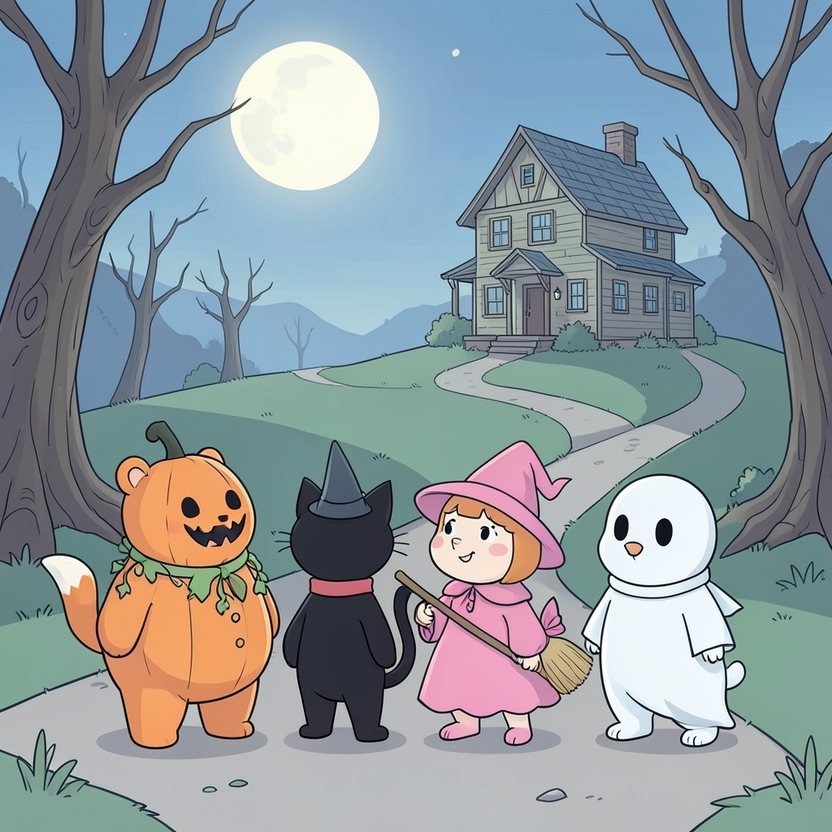

Titistoire › Les Étoiles (3-6 ans)
Nestor et la maison qui craque
Une histoire de Nestor l'ourson pour parler de : dire « j'ai peur ».

▶ Écouter et regarder l'histoire
Gratuit, sans inscription : la voix lit, le texte suit mot à mot, les images tournent comme dans un album.
Le texte de l'histoire
Le soir d'Halloween, une idée trotte dans la tête de Filou. « Et si on entrait dans la vieille maison biscornue, en haut de la colline ? Celle qui craque. Il paraît qu'elle est hantée ! »
« Chiche ! » lance Rosie. « Pourquoi pas », répond Plume. Tous se tournent vers Nestor, déguisé en citrouille. Son ventre se noue. « Hmm… oui, oui, bredouille-t-il avec un petit sourire. Même pas peur. »
Ce n'est pas vrai du tout. Rien qu'à regarder la maison, Nestor a la gorge serrée. Mais personne d'autre n'a l'air d'avoir peur. Alors il se tait.
La porte grince. Criiiic. Dedans, il fait noir comme dans un four, ça sent la poussière, et des toiles d'araignée pendent du plafond, grandes comme des draps.
« Même pas peur », affirme Filou, d'une voix un peu trop aiguë. « Même pas peur », souffle Rosie, qui marche collée à lui. « Même pas peur », répète Nestor. Ses genoux jouent des castagnettes.
Ils s'enfoncent dans le couloir. Chaque planche craque. Crac. Crac. Et là-haut, à l'étage, quelque chose répond. Boum.
« C'est le vent », assure Plume. Boum, boum. « C'est un volet », chuchote Rosie. Alors un long gémissement dévale l'escalier. Hoooooou…
« On monte ? » demande Filou en se mordillant la lèvre. Il n'a pas l'air d'en avoir follement envie. Mais c'est son idée. Et Rosie a répondu chiche. On ne revient pas sur un chiche.
Nestor fixe l'escalier, noir comme un puits. Son cœur cogne. Ses pattes sont glacées, et la lanterne tremblote. Tout son corps lui répète la même chose, et ce n'est pas « même pas peur ».
Il pose une patte sur la première marche, puis s'arrête. Dans sa tête, ça tourbillonne : « Si je le dis, ils vont se moquer. Ils diront que je suis un bébé. »
Puis une autre pensée arrive : « Mais si je ne le dis pas, il faudra monter. Et je n'en ai pas envie du tout. »
Alors Nestor prend une grande goulée d'air, et il dit, pas très fort : « Moi, j'ai peur. J'ai trop peur. Je ne monte pas. Je vous attends dehors. »
Un grand silence. Nestor guette les rires. Le museau baissé, il contemple ses pieds de citrouille.
« Ouf, souffle une petite voix. Moi aussi, j'ai peur. » C'est Rosie. Rosie ! « Moi, j'ai peur depuis la porte », avoue Plume. « Et moi, depuis le bas de la colline », marmonne Filou.
Ils se dévisagent, tous les quatre. Puis ils éclatent de rire, un grand rire à se tenir le ventre, qui fait s'envoler la poussière. Ça soulage tellement que la maison paraît déjà moins noire.
Hoooooou… La plainte reprend. Mais à présent qu'ils ne font plus semblant, ils tendent mieux l'oreille. « On dirait… quelqu'un qui pleure », remarque Plume.
En haut de l'escalier, une ombre minuscule apparaît, la tête en bas. C'est une chauve-souris, pas plus grosse qu'une pomme de pin. « Vous partez déjà ? » renifle-t-elle en essuyant une larme.
« Je m'appelle Vesper. J'habite ici. J'avais tout préparé, les bonbons, les guirlandes… mais personne ne monte jamais. Tout le monde a trop peur de ma maison. »
Nestor lève les yeux vers l'escalier. Il y fait toujours noir. Lui a toujours un peu peur. « Si on monte tous ensemble, propose-t-il, et que je peux redescendre quand je veux… alors je veux bien. »
Ils gravissent les marches à la queue leu leu, patte dans la patte. Le boum-boum, c'était Vesper qui installait sa table. Là-haut les attendent des bougies, des guirlandes de feuilles rousses, et un saladier rempli de bonbons.
« Vous êtes mes tout premiers invités », gazouille Vesper, rose de plaisir. C'est le meilleur goûter d'Halloween de la forêt. Dans la maison la plus effrayante.
Sur le chemin du retour, Filou donne un petit coup de coude à Nestor. « Heureusement que tu l'as dit. Moi, je serais monté en claquant des dents, sans rien avouer à personne. »
« Le plus courageux, c'est Nestor ! proclame Rosie en lui levant la patte. Il a dit la chose la plus difficile. » Nestor rougit sous sa citrouille.
Depuis ce soir-là, quand quelque chose les effraie trop, les quatre amis ont un mot de passe. Ils ne disent plus « même pas peur ». Ils disent : « Moi, un peu. Et toi ? »